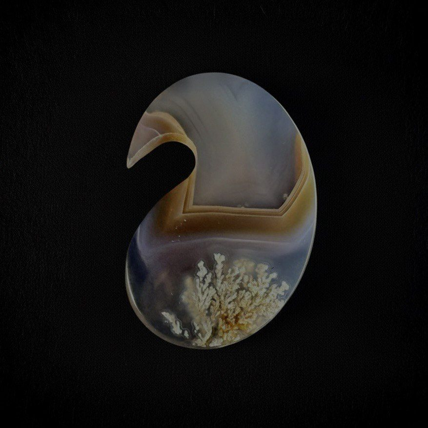
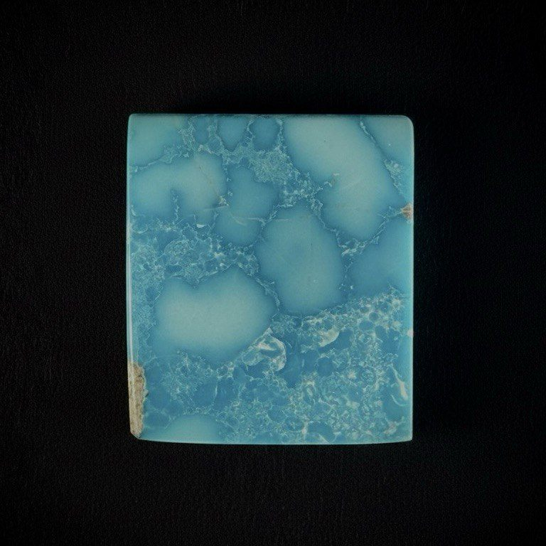
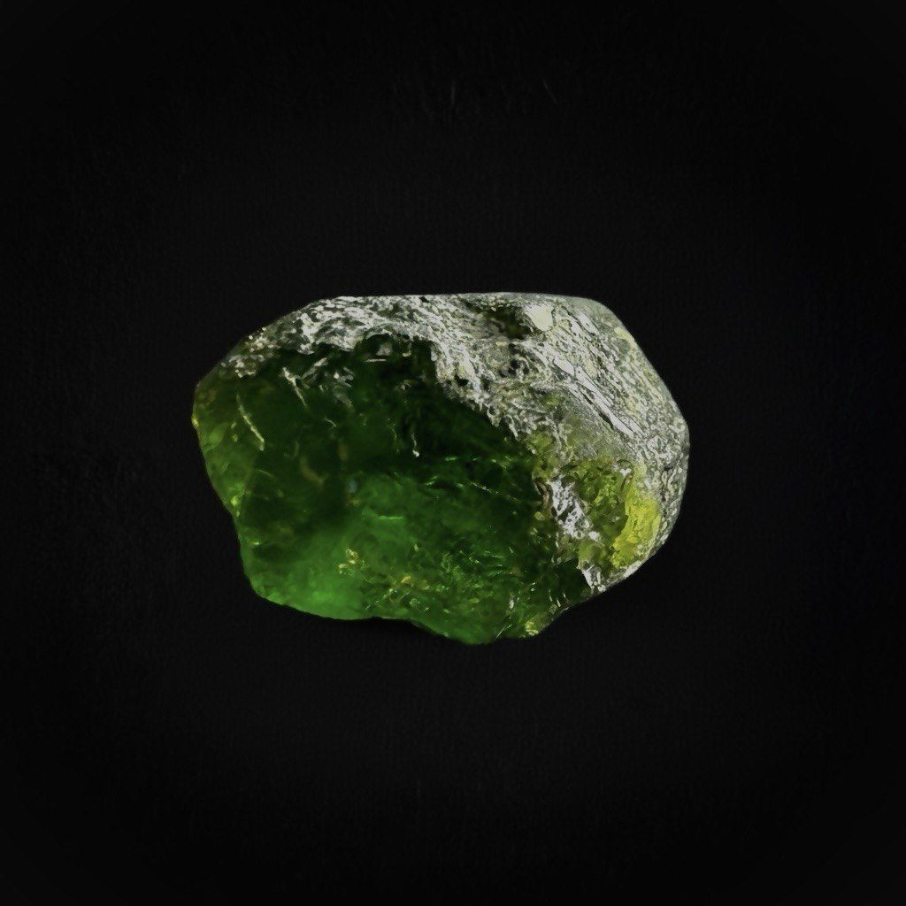

Rosino focuses on three signature materials for collaborations: Landscape Agate, Persian Turquoise and Demantoid Garnet.
You define the brief. We curate the selection. Work begins only after your approval.
You share your project, mood, colour direction, preferred stone and size range.
We select the closest matches from Landscape Agate, Persian Turquoise and Demantoid Garnet and present a concise selection.
You confirm the stones. We prepare, grade and supply them for your schedule.
Three core materials selected for luxury design applications.

Natural landscape scenes formed inside translucent agate.

Saturated blue tones and fine matrix for inlays, accents and statement pieces.

Rare green garnet with strong dispersion for high-end jewellery and limited editions.
We specialise exclusively in Landscape Agate, Persian Turquoise and Demantoid Garnet — stones selected for their natural character, rarity and visual depth.